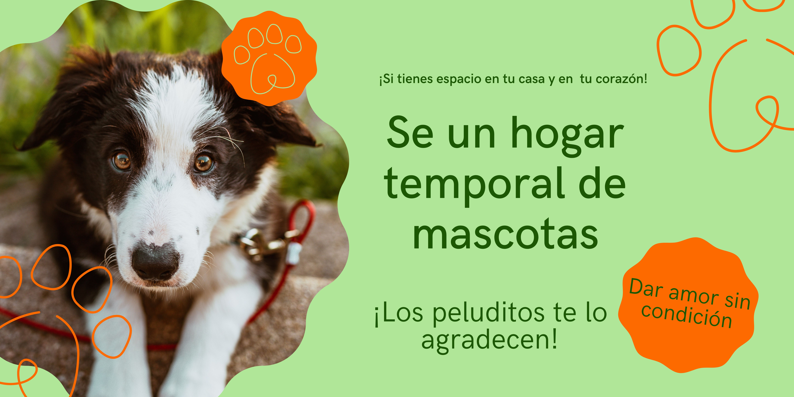

No es necesario ser un experto en cuidado de animales para ayudar a los refugios de mascotas, solo hace falta tener la voluntad de querer ayudar. Sin importar la experiencia previa que tengas tratando con animales, es muy probable que las organizaciones se puedan beneficiar de tu ayuda. Hay muchas formas para apoyar a los refugios de mascotas. A continuación, encontrarás un listado de acciones que puedes hacer hoy mismo para darle tu apoyo a nuestras organizaciones y a sus mascotas en adopción.
Los hogares temporales son una pieza fundamental en la dinámica de adopción de mascotas, ya que permiten aliviar la "sobrepoblación" de animales rescatados dentro de los refugios y al mismo tiempo proporcionan a las mascotas un entorno favorable para su recuperación antes de ser adoptadas. Pero... ¿Qué es un hogar temporal? Se considera un hogar temporal cuando una persona (o familia) decide alojar en su hogar una o más mascotas rescatadas por un tiempo determinado. De esta manera, la persona que se ofrece a ser hogar temporal cuida al animal y lo ayuda a recuperarse de sus heridas físicas y traumas emocionales hasta el momento de su adopción.
¿Esto es algo que te llama la atención? Contacta a nuestros refugios o rescatistas y ofrécele ser un Hogar Temporal para sus perros en adopción.
